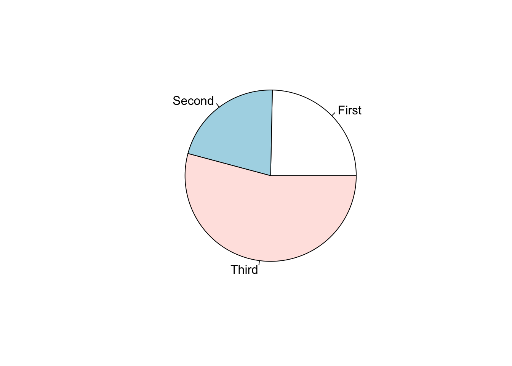
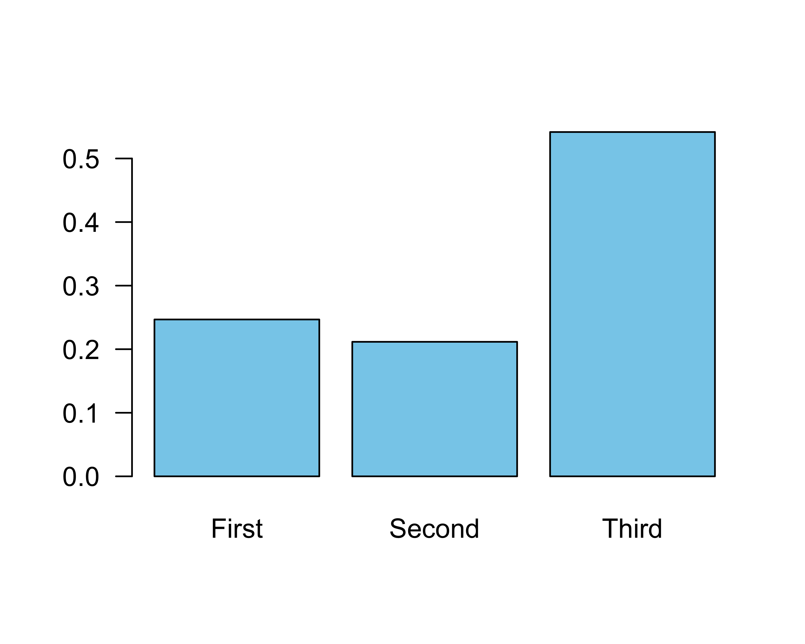
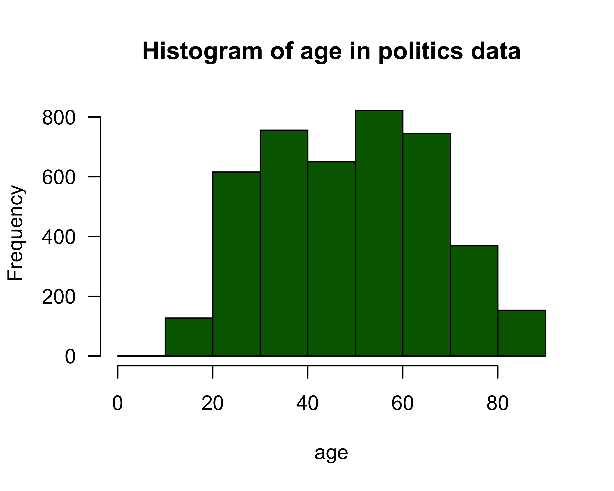
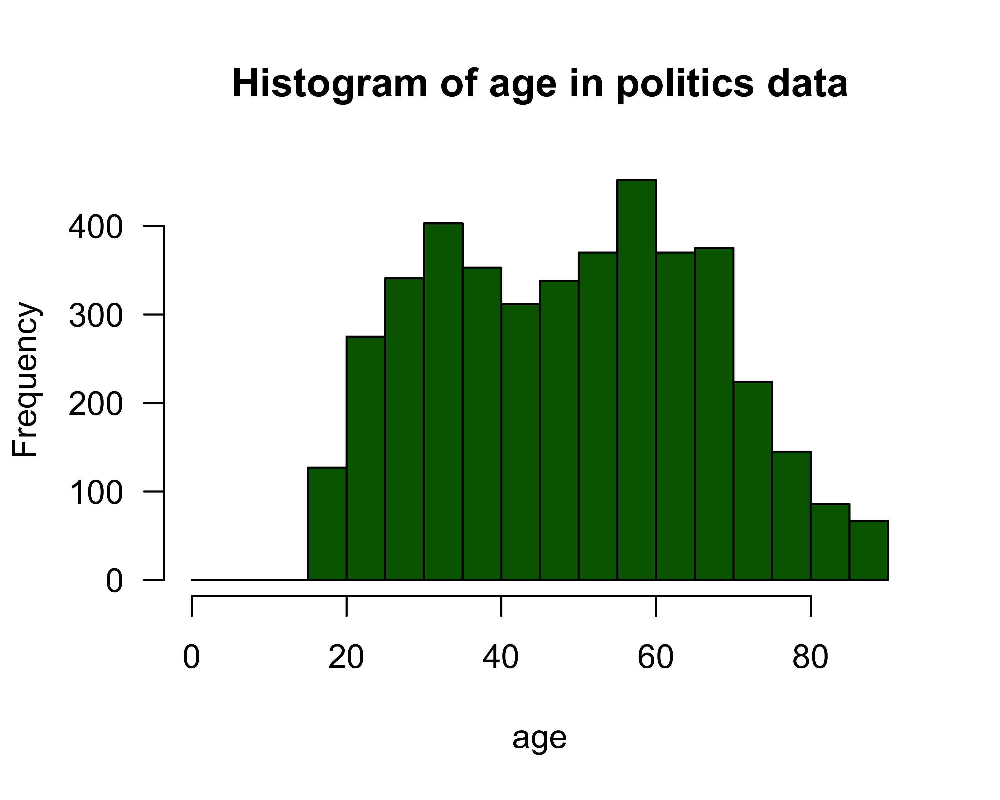
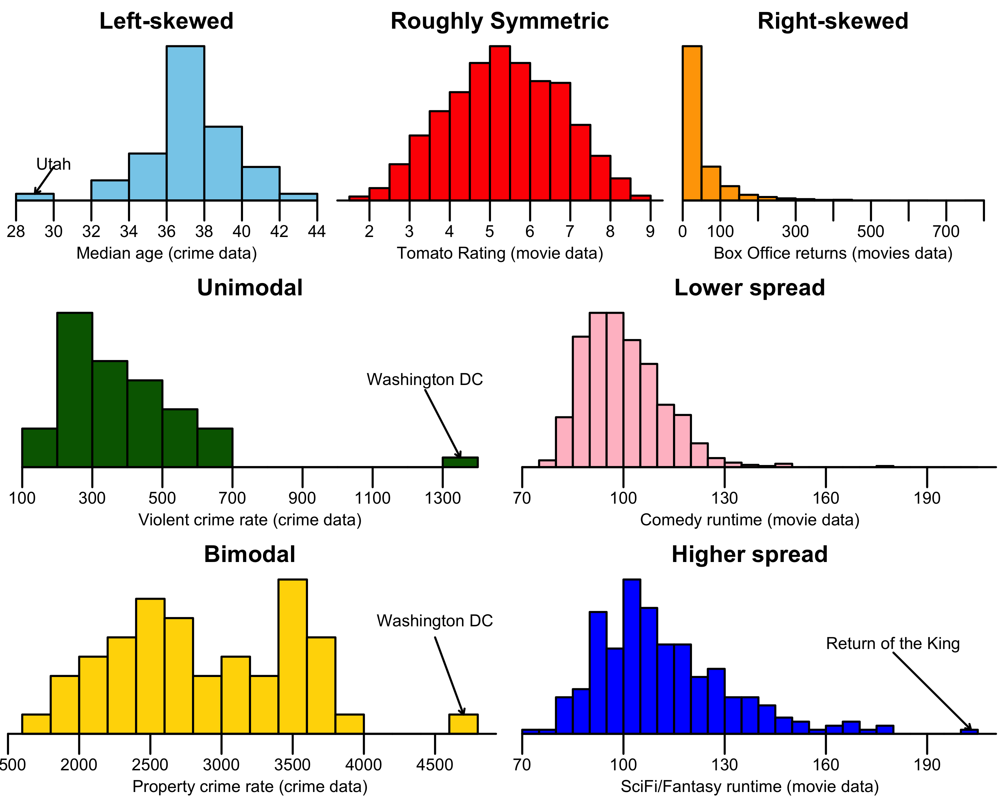

What is a Distribution?
We will hear the term distribution a lot during this class. When we think about the distribution of a variable, we are referring to how the different values of the variables are distributed across observations. This distribution gives us a sense of how much variation there is and what the most common values are for a given variable. Intuitively, we think about distributions in our personal life any time we think about how we “measure” up relative to everyone else on something (income, number of Facebook friends, GRE scores, etc.). We want to know where we “fall” in the distribution of these variables.
A distribution can be represented graphically. However, the technique we use to graph the distribution will depend on whether we have a categorical or a quantitative variable. For categorical variables, we will use a barplot, while for quantitative variables, we will use a histogram.
For quantitative variables, we can also calculate summary statistics that will give us information about the distribution, such as its center and spread. We will save those calculations for later modules. For this module, we will focus on graphical techniques.
Looking at the distribution of a categorical variable
Calculating the frequency
In order to graph the distribution of a categorical variable, we first need to calculate its frequency. The frequency is just the number of observations that fall into a given category of a categorical variable. We could, for example, count up the number of passengers who were in the various passenger classes on the Titanic. Doing so would give us the following:
| Passenger class | Frequency |
|---|---|
| First | 323 |
| Second | 277 |
| Third | 709 |
| Total | 1309 |
There were 323 first class passengers, 277 second class passengers, and 709 third class passengers. Adding those numbers up gives us 1,309 total passengers. R will calculate these numbers for us easily using the table command:
table(titanic$pclass)##
## First Second Third
## 323 277 709Frequency, proportion, and percent
The frequency we just calculated is sometimes called the “absolute” frequency because it just provides the raw number of observations. It is typically more useful to represent this frequency in terms of proportions. Proportions go from 0-1 and give us the share of observations that fall into each category. We can calculate the proportion by simply dividing our frequency by the total number of observations:
| Passenger class | Frequency | Proportion |
|---|---|---|
| First | 323 | 323/1309=0.247 |
| Second | 277 | 277/1309=0.212 |
| Third | 709 | 709/1309=0.542 |
| Total | 1309 |
R provides a nice shorthand function titled prop.table to conduct this operation:
prop.table(table(titanic$pclass))##
## First Second Third
## 0.2467532 0.2116119 0.5416348Note that I had to “wrap” the prop.table command around the table command here because the prop.table command expects a vector of numbers that it will turn into proportions.
We often convert proportions to percents which most people are more familiar. To convert a proportion to a percent, just multiply by 100:
| Passenger class | Frequency | Proportion | Percent |
|---|---|---|---|
| First | 323 | 323/1309=0.247 | 0.247*100=24.7% |
| Second | 277 | 277/1309=0.212 | 0.212*100=21.2% |
| Third | 709 | 709/1309=0.542 | 0.542*100=54.2% |
| Total | 1309 |
24.7% of passengers were first class, 21.2% of passengers were second class, and 54.2% of passengers were third class. So, just over half of passengers were third class and the remaining passengers were fairly evenly split between first and second class.
Barplots and piecharts
Now that we have proportions/percents, we can use these values to construct a graphical display of the distribution. The piechart is a very common technique here. I am sure you have all seen examples of piecharts. In a piechart, you show each category’s percentage as a slice of a pie. Here is the R code and output of a piechart for the passenger class variable:
p <- prop.table(table(titanic$pclass))
pie(p)
Although piecharts are popular, they are actually not a very good tool. In order to judge the relative size of the slices, your eye has to make judgments in two dimensions and it can often be difficult to decide which slice is bigger. In this case, for example, the relative size of first and second class are quite close. A better way to display the distribution is by using a barplot in which vertical (or horizontal) bars give the proportion or percent:
barplot(p, col="skyblue", las=1)
Now your eye only has to work in one dimension to identify the relative size of each share. In this case, we can clearly see that the first class bar is higher than the second class bar. Barplots are almost always better at displaying distributions than piecharts.
Looking at the distribution of a quantitative variable
Barplots won’t work for quantitative variables because quantitative variables don’t have categories. However, we can do something quite similar with the histogram.
One way to think about the histogram is that we are imposing a set of categories on a quantitative variable by breaking our quantitative variable into a set of equally wide intervals that we call bins. The most important decision with a quantitative variable is how wide to make these bins. As an example, lets take the age variable from our politics dataset. I could break this variable into five-year intervals that go from 0-5, 5-10, 10-15, 15-20, and so on. Alternatively, I could use 10-year intervals from 0-10, 10-20, 20-30, and so on. I could also use any other interval I like such as 1-year, 3-year, and so on. Lets use 10-year intervals for this example. I then just have to count up the number of observations that fall into each 10 year interval.
| Age | Frequency |
|---|---|
| 0-10 | 0 |
| 10-20 | 127 |
| 20-30 | 616 |
| 30-40 | 756 |
| 40-50 | 650 |
| 50-60 | 822 |
| 60-70 | 745 |
| 70-80 | 369 |
| 80-90 | 153 |
Because the survey was only administered to adults, I have zero individuals from 0-10 and only a few in the 10-20 age range. Note that I have to make a decision on how to handle “edge” cases that are on the border between two bins. For example, does someone who is age 20 go in the 10-20 bin or the 20-30 bin? In this case, I have assigned all of these cases to the higher bin (e.g. 20-30 in the case of 20-year olds) because this is the default behavior in R.
Now that we have the frequencies for each bin, we can plot the histogram. The histogram looks much like a barplot except for two important differences. First, on the x-axis we have a numeric scale for the quantitative variable rather than categories. Second, we don’t put any space between our bars.
Here is some R code and output for creating a histogram. First, we define our intervals using the seq command to define our bins and then we use the hist command to make the plot. Notice, I am adding a few other options to the hist command in order to produce some nice labeling and colors.
bins <- seq(from=0, to=90, by=10)
hist(politics$age, breaks=bins, col="darkgreen", xlab="age",
main="Histogram of age in politics data", las=1)
I can see the peak in the distribution in the 50’s (the baby boomers) with a long fat tail to the right and steeper drop off (due to smaller cohorts and higher mortality) on the left.
What would this histogram look like if I had used 5-year bin widths instead of 10-year bins? Lets try it:
bins <- seq(from=0, to=90, by=5)
hist(politics$age, breaks=bins, col="darkgreen", xlab="age",
main="Histogram of age in politics data", las=1)
I get more or less the same overall impression but a more fine-grained view. Sometimes adjusting bin width can reveal or hide important trends and sometimes it can just make it more difficult to read. As an exercise, try adjusting the bin width in this example histogram for movie runtime from our movie dataset.
There are four general things to be on the lookout for when examining a histogram.
- Shape. Is the shape symmetric or is one of the tails longer than the other? When the long tail is on the right, we refer to this distribution as right skewed. When the long tail is on the left, we refer to the distribution as left skewed.
- Center. Where is the center of the distribution? This center is often the same as the peak in the data. Does the histogram have a single peak or multiple peaks? When a distribution has one peak, we call it unimodal. When it has two peaks, we call it bimodal and so on.
- Spread. How spread out are the values around the center? Do they cluster tightly around the center or are they widely spread out? The answer to this question is generally a relative one, which is to say you can only say how spread out a variable is in relation to the spread of some other variable.
- Outliers. Are there extreme values which fall outside the range of the rest of the data? We want to pay attention to these values because they may have a strong influence on the statistics we calculate to summarize a distribution. They might also help identify data input errors.
The figure below shows some examples of each of these concepts from the various datasets we are using in class.
